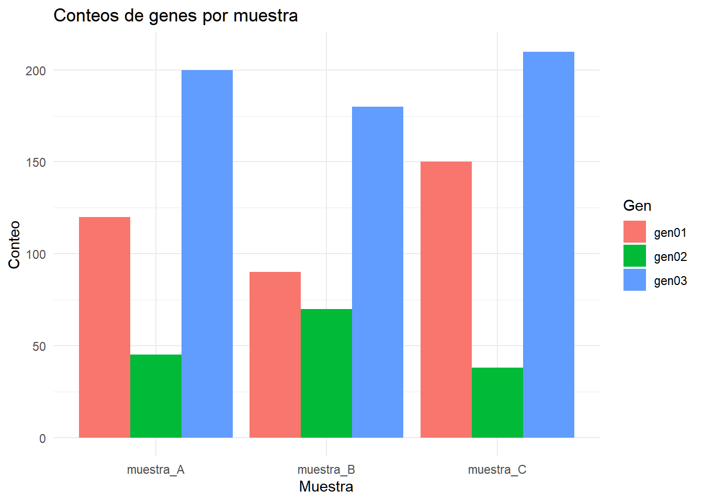

Código
install.packages(c("readr", "dplyr", "tidyr", "tibble"))En la sesión 2 aprendimos a reconocer archivos, importar tablas y explorar su contenido. Ahora vamos a transformar esas tablas para responder preguntas concretas: ¿qué alineamientos cumplen ciertos criterios?, ¿cuántos resultados hay por secuencia de consulta?, ¿cómo crear nuevas columnas? y ¿cómo reorganizar una tabla para facilitar su análisis?
Trabajaremos con resultados sintéticos con la estructura de una salida tabular de BLAST, así como con una tabla pequeña de conteos de genes. No necesitamos ejecutar BLAST ni interpretar los resultados como hallazgos biológicos: los archivos son materiales didácticos.
Al finalizar podrás:
%>% para encadenar operaciones sobre tablas.dplyr.tidyr.Descarga los datos nuevos y descomprímelos datos_sesion_03_dplyr.zip.
Utilizaremos resultados_blast.tsv de la sesión 2 y un archivo adicional conteos_genes.csv. Organiza las carpetas así:
mi_proyecto/
├── mi_proyecto.Rproj
├── data_raw/
│ ├── datos_sesion_02_blast/
│ │ └── resultados_blast.tsv
│ └── datos_sesion_03/
│ └── conteos_genes.csv
└── results/La instalación de paquetes se realiza una sola vez en cada equipo; library() se utiliza en las sesiones en que los necesitemos.
install.packages(c("readr", "dplyr", "tidyr", "tibble"))library(readr)Warning: package 'readr' was built under R version 4.6.1library(dplyr)Warning: package 'dplyr' was built under R version 4.6.1
Adjuntando el paquete: 'dplyr'The following objects are masked from 'package:stats':
filter, lagThe following objects are masked from 'package:base':
intersect, setdiff, setequal, unionlibrary(tidyr)Warning: package 'tidyr' was built under R version 4.6.1library(tibble)Warning: package 'tibble' was built under R version 4.6.1getwd()[1] "C:/Users/HaydeePeruyero/Documents/RSites/Intro_to_R_Bioinfo_2027-1"ruta_blast <- "data_raw/datos_sesion_02_blast/resultados_blast.tsv"
ruta_conteos <- "data_raw/datos_sesion_03_dplyr/conteos_genes.csv"
stopifnot(file.exists(ruta_blast), file.exists(ruta_conteos))
blast <- read_tsv(ruta_blast, show_col_types = FALSE)
conteos <- read_csv(ruta_conteos, show_col_types = FALSE)
glimpse(blast)Rows: 20
Columns: 6
$ query_id <chr> "seq01", "seq01", "seq01", "seq02", "seq02", "seq03", "seq0…
$ subject_id <chr> "ref_001", "ref_002", "ref_003", "ref_004", "ref_005", "ref…
$ pident <dbl> 87.9, 68.2, 93.5, 82.6, 68.7, 88.2, 93.6, 97.8, 99.0, 83.9,…
$ length <dbl> 216, 245, 168, 111, 292, 254, 319, 191, 229, 162, 101, 306,…
$ evalue <dbl> 1e-40, 1e-36, 1e-35, 1e-85, 1e-57, 1e-05, 1e-36, 1e-71, 1e-…
$ bitscore <dbl> 118.7, 184.6, 386.1, 259.9, 322.6, 361.9, 96.6, 97.9, 335.9…glimpse(conteos)Rows: 10
Columns: 5
$ gen <chr> "gen01", "gen02", "gen03", "gen04", "gen05", "gen06", "gen07…
$ muestra_A <dbl> 120, 45, 200, 0, 98, 310, 65, 160, 20, 250
$ muestra_B <dbl> 90, 70, 180, 15, 135, 295, 75, 140, 30, 270
$ muestra_C <dbl> 150, 38, 210, 8, 110, 340, 95, 125, 25, 230
$ muestra_D <dbl> 210, 62, 175, 22, 80, 300, 105, 155, 40, 290La función glimpse() permite inspeccionar rápidamente la estructura de un conjunto de datos. Muestra el número de filas y columnas, los nombres de las variables, sus tipos de datos y algunos de sus valores.
A diferencia de head(), que presenta las primeras filas en forma de tabla, glimpse() organiza la información por columnas, lo que facilita revisar conjuntos de datos con muchas variables.
| Función | ¿Qué muestra? |
|---|---|
head() |
Las primeras 6 filas del conjunto de datos, en forma de tabla. |
glimpse() |
El número de filas y columnas, los nombres de las variables, sus tipos de datos y algunos valores. |
str() |
La estructura interna del objeto en R, incluyendo tipos de datos y una vista de su contenido. |
Estas funciones son útiles después de importar archivos bioinformáticos para comprobar que R haya interpretado correctamente la estructura y los tipos de datos, antes de comenzar su manipulación o análisis.
Convención: en los ejemplos se utiliza %>% (del paquete magrittr, reexportado por dplyr). No utilizaremos el operador nativo |> en estas notas. Los criterios numéricos de filtrado son ejemplos para practicar R, no umbrales universales para determinar homología o significancia biológica.
tibble, dplyrtibble?Un tibble es una variante moderna de data.frame. Conserva la estructura de filas y columnas, pero suele mostrar los datos de manera más compacta, indicando el tipo de cada columna. readr importa archivos como tibbles.
class(blast)[1] "spec_tbl_df" "tbl_df" "tbl" "data.frame" class(as.data.frame(blast))[1] "data.frame"Podemos construir tablas pequeñas para experimentar sin tener que crear un archivo externo:
ejemplo <- tibble(
secuencia = c("seq01", "seq02", "seq03"),
longitud = c(150, 230, 180),
grupo = c("A", "B", "A")
)
ejemplo# A tibble: 3 × 3
secuencia longitud grupo
<chr> <dbl> <chr>
1 seq01 150 A
2 seq02 230 B
3 seq03 180 A tribble() resulta práctico cuando queremos escribir la tabla por filas:
ejemplo2 <- tribble(
~secuencia, ~longitud, ~grupo,
"seq01", 150, "A",
"seq02", 230, "B",
"seq03", 180, "A"
)
ejemplo2# A tibble: 3 × 3
secuencia longitud grupo
<chr> <dbl> <chr>
1 seq01 150 A
2 seq02 230 B
3 seq03 180 A El símbolo ~ señala los nombres de las columnas en tribble(). No es necesario utilizar esta función para tablas grandes; es especialmente útil para ejemplos y pruebas.
dplyrEl paquete dplyr proporciona funciones que permiten manipular y transformar conjuntos de datos de manera sencilla. Entre otras operaciones, podemos seleccionar columnas, filtrar observaciones, ordenar registros, crear nuevas variables y obtener resúmenes de nuestros datos.
Estas operaciones son especialmente útiles cuando trabajamos con conjuntos de datos bioinformáticos, como resultados de BLAST, conteos de genes o información de muestras.
A continuación, se presentan algunas de las funciones más utilizadas:
| Función | ¿Qué hace? |
|---|---|
filter() |
Filtra filas que cumplen determinadas condiciones. |
select() |
Selecciona columnas de un conjunto de datos. |
count() |
Cuenta observaciones por categoría o grupo. |
arrange() |
Ordena las filas según una o varias columnas. |
group_by() |
Agrupa observaciones según una o varias variables. |
mutate() |
Crea nuevas columnas o modifica las existentes. |
summarize() |
Calcula estadísticas de resumen, como medias, sumas o máximos. |
transmute() |
Crea nuevas columnas y conserva únicamente las columnas resultantes. |
ungroup() |
Elimina los agrupamientos definidos previamente. |
slice_min() |
Selecciona filas con los valores más pequeños de una variable. |
slice_max() |
Selecciona filas con los valores más grandes de una variable. |
left_join() |
Combina dos tablas conservando todas las filas de la primera. |
Una ventaja de dplyr es que podemos combinar varias de estas funciones para realizar diferentes operaciones sobre un mismo conjunto de datos. Para facilitar este proceso, utilizaremos el operador %>%, conocido como pipe.
%>%Sin pipes, una operación puede requerir objetos intermedios:
filtrados <- filter(blast, pident >= 90)
seleccionados <- select(filtrados, query_id, subject_id, pident, bitscore)
ordenados <- arrange(seleccionados, desc(bitscore))
head(ordenados)# A tibble: 5 × 4
query_id subject_id pident bitscore
<chr> <chr> <dbl> <dbl>
1 seq01 ref_003 93.5 386.
2 seq03 ref_010 99 336.
3 seq07 ref_019 95.7 138.
4 seq03 ref_009 97.8 97.9
5 seq03 ref_008 93.6 96.6Con %>%, la misma secuencia se lee de arriba hacia abajo:
blast %>%
filter(pident >= 90) %>%
select(query_id, subject_id, pident, bitscore) %>%
arrange(desc(bitscore))# A tibble: 5 × 4
query_id subject_id pident bitscore
<chr> <chr> <dbl> <dbl>
1 seq01 ref_003 93.5 386.
2 seq03 ref_010 99 336.
3 seq07 ref_019 95.7 138.
4 seq03 ref_009 97.8 97.9
5 seq03 ref_008 93.6 96.6El resultado a la izquierda de %>% se envía como primer argumento de la función siguiente. En Bash, | conecta flujos de texto entre procesos; aquí encadenamos objetos y funciones de R. La semejanza ayuda a leer la sintaxis, aunque los mecanismos son diferentes.
En RStudio, el atajo para insertar el pipe configurado suele ser Ctrl + Shift + M (Windows/Linux) o Cmd + Shift + M (macOS). Si inserta |>, puedes escribir %>% directamente o cambiar la preferencia del editor.
Puedes llamar una función indicando explícitamente su paquete: dplyr::filter() o readr::read_tsv(). Es útil cuando dos paquetes tienen funciones con el mismo nombre.
select(): elegir columnasblast %>%
select(query_id, subject_id, pident)# A tibble: 20 × 3
query_id subject_id pident
<chr> <chr> <dbl>
1 seq01 ref_001 87.9
2 seq01 ref_002 68.2
3 seq01 ref_003 93.5
4 seq02 ref_004 82.6
5 seq02 ref_005 68.7
6 seq03 ref_007 88.2
7 seq03 ref_008 93.6
8 seq03 ref_009 97.8
9 seq03 ref_010 99
10 seq04 ref_010 83.9
11 seq05 ref_013 75
12 seq05 ref_014 88
13 seq05 ref_015 85.4
14 seq06 ref_016 80.8
15 seq06 ref_017 71.3
16 seq07 ref_019 95.7
17 seq07 ref_020 73
18 seq07 ref_021 77.4
19 seq08 ref_022 69.9
20 seq08 ref_023 68.8blast %>%
select(-evalue) # Todas las columnas excepto evalue# A tibble: 20 × 5
query_id subject_id pident length bitscore
<chr> <chr> <dbl> <dbl> <dbl>
1 seq01 ref_001 87.9 216 119.
2 seq01 ref_002 68.2 245 185.
3 seq01 ref_003 93.5 168 386.
4 seq02 ref_004 82.6 111 260.
5 seq02 ref_005 68.7 292 323.
6 seq03 ref_007 88.2 254 362.
7 seq03 ref_008 93.6 319 96.6
8 seq03 ref_009 97.8 191 97.9
9 seq03 ref_010 99 229 336.
10 seq04 ref_010 83.9 162 310.
11 seq05 ref_013 75 101 411.
12 seq05 ref_014 88 306 175.
13 seq05 ref_015 85.4 287 160.
14 seq06 ref_016 80.8 314 49.8
15 seq06 ref_017 71.3 210 226.
16 seq07 ref_019 95.7 106 138.
17 seq07 ref_020 73 325 79.3
18 seq07 ref_021 77.4 104 174.
19 seq08 ref_022 69.9 205 306.
20 seq08 ref_023 68.8 308 152. También podemos seleccionar columnas por patrones en su nombre, mediante ayudantes como starts_with(); esto será especialmente útil cuando tengamos muchas columnas:
blast %>% select(starts_with("query"), pident, bitscore)# A tibble: 20 × 3
query_id pident bitscore
<chr> <dbl> <dbl>
1 seq01 87.9 119.
2 seq01 68.2 185.
3 seq01 93.5 386.
4 seq02 82.6 260.
5 seq02 68.7 323.
6 seq03 88.2 362.
7 seq03 93.6 96.6
8 seq03 97.8 97.9
9 seq03 99 336.
10 seq04 83.9 310.
11 seq05 75 411.
12 seq05 88 175.
13 seq05 85.4 160.
14 seq06 80.8 49.8
15 seq06 71.3 226.
16 seq07 95.7 138.
17 seq07 73 79.3
18 seq07 77.4 174.
19 seq08 69.9 306.
20 seq08 68.8 152. filter(): elegir filasLas condiciones se evalúan para cada fila. Podemos combinar criterios con & (y), | (o), o escribir condiciones separadas por comas, que equivale a combinarlas con «y».
blast %>% filter(pident >= 90)# A tibble: 5 × 6
query_id subject_id pident length evalue bitscore
<chr> <chr> <dbl> <dbl> <dbl> <dbl>
1 seq01 ref_003 93.5 168 1e-35 386.
2 seq03 ref_008 93.6 319 1e-36 96.6
3 seq03 ref_009 97.8 191 1e-71 97.9
4 seq03 ref_010 99 229 1e- 8 336.
5 seq07 ref_019 95.7 106 1e-70 138. blast %>% filter(pident >= 90, length >= 150)# A tibble: 4 × 6
query_id subject_id pident length evalue bitscore
<chr> <chr> <dbl> <dbl> <dbl> <dbl>
1 seq01 ref_003 93.5 168 1e-35 386.
2 seq03 ref_008 93.6 319 1e-36 96.6
3 seq03 ref_009 97.8 191 1e-71 97.9
4 seq03 ref_010 99 229 1e- 8 336. blast %>% filter(query_id == "seq01" | query_id == "seq02")# A tibble: 5 × 6
query_id subject_id pident length evalue bitscore
<chr> <chr> <dbl> <dbl> <dbl> <dbl>
1 seq01 ref_001 87.9 216 1e-40 119.
2 seq01 ref_002 68.2 245 1e-36 185.
3 seq01 ref_003 93.5 168 1e-35 386.
4 seq02 ref_004 82.6 111 1e-85 260.
5 seq02 ref_005 68.7 292 1e-57 323.blast %>% filter(query_id %in% c("seq01", "seq03", "seq05"))# A tibble: 10 × 6
query_id subject_id pident length evalue bitscore
<chr> <chr> <dbl> <dbl> <dbl> <dbl>
1 seq01 ref_001 87.9 216 1e-40 119.
2 seq01 ref_002 68.2 245 1e-36 185.
3 seq01 ref_003 93.5 168 1e-35 386.
4 seq03 ref_007 88.2 254 1e- 5 362.
5 seq03 ref_008 93.6 319 1e-36 96.6
6 seq03 ref_009 97.8 191 1e-71 97.9
7 seq03 ref_010 99 229 1e- 8 336.
8 seq05 ref_013 75 101 1e-26 411.
9 seq05 ref_014 88 306 1e-23 175.
10 seq05 ref_015 85.4 287 1e-12 160. == compara igualdad; = se utiliza para asignar argumentos en funciones. El operador %in% comprueba si un valor pertenece a un conjunto.
arrange(): ordenar registrosblast %>% arrange(bitscore) # Menor a mayor# A tibble: 20 × 6
query_id subject_id pident length evalue bitscore
<chr> <chr> <dbl> <dbl> <dbl> <dbl>
1 seq06 ref_016 80.8 314 1e-49 49.8
2 seq07 ref_020 73 325 1e-75 79.3
3 seq03 ref_008 93.6 319 1e-36 96.6
4 seq03 ref_009 97.8 191 1e-71 97.9
5 seq01 ref_001 87.9 216 1e-40 119.
6 seq07 ref_019 95.7 106 1e-70 138.
7 seq08 ref_023 68.8 308 1e-63 152.
8 seq05 ref_015 85.4 287 1e-12 160.
9 seq07 ref_021 77.4 104 1e-54 174.
10 seq05 ref_014 88 306 1e-23 175.
11 seq01 ref_002 68.2 245 1e-36 185.
12 seq06 ref_017 71.3 210 1e-26 226.
13 seq02 ref_004 82.6 111 1e-85 260.
14 seq08 ref_022 69.9 205 1e-75 306.
15 seq04 ref_010 83.9 162 1e-62 310.
16 seq02 ref_005 68.7 292 1e-57 323.
17 seq03 ref_010 99 229 1e- 8 336.
18 seq03 ref_007 88.2 254 1e- 5 362.
19 seq01 ref_003 93.5 168 1e-35 386.
20 seq05 ref_013 75 101 1e-26 411. blast %>% arrange(desc(bitscore)) # Mayor a menor# A tibble: 20 × 6
query_id subject_id pident length evalue bitscore
<chr> <chr> <dbl> <dbl> <dbl> <dbl>
1 seq05 ref_013 75 101 1e-26 411.
2 seq01 ref_003 93.5 168 1e-35 386.
3 seq03 ref_007 88.2 254 1e- 5 362.
4 seq03 ref_010 99 229 1e- 8 336.
5 seq02 ref_005 68.7 292 1e-57 323.
6 seq04 ref_010 83.9 162 1e-62 310.
7 seq08 ref_022 69.9 205 1e-75 306.
8 seq02 ref_004 82.6 111 1e-85 260.
9 seq06 ref_017 71.3 210 1e-26 226.
10 seq01 ref_002 68.2 245 1e-36 185.
11 seq05 ref_014 88 306 1e-23 175.
12 seq07 ref_021 77.4 104 1e-54 174.
13 seq05 ref_015 85.4 287 1e-12 160.
14 seq08 ref_023 68.8 308 1e-63 152.
15 seq07 ref_019 95.7 106 1e-70 138.
16 seq01 ref_001 87.9 216 1e-40 119.
17 seq03 ref_009 97.8 191 1e-71 97.9
18 seq03 ref_008 93.6 319 1e-36 96.6
19 seq07 ref_020 73 325 1e-75 79.3
20 seq06 ref_016 80.8 314 1e-49 49.8blast %>% arrange(query_id, desc(bitscore))# A tibble: 20 × 6
query_id subject_id pident length evalue bitscore
<chr> <chr> <dbl> <dbl> <dbl> <dbl>
1 seq01 ref_003 93.5 168 1e-35 386.
2 seq01 ref_002 68.2 245 1e-36 185.
3 seq01 ref_001 87.9 216 1e-40 119.
4 seq02 ref_005 68.7 292 1e-57 323.
5 seq02 ref_004 82.6 111 1e-85 260.
6 seq03 ref_007 88.2 254 1e- 5 362.
7 seq03 ref_010 99 229 1e- 8 336.
8 seq03 ref_009 97.8 191 1e-71 97.9
9 seq03 ref_008 93.6 319 1e-36 96.6
10 seq04 ref_010 83.9 162 1e-62 310.
11 seq05 ref_013 75 101 1e-26 411.
12 seq05 ref_014 88 306 1e-23 175.
13 seq05 ref_015 85.4 287 1e-12 160.
14 seq06 ref_017 71.3 210 1e-26 226.
15 seq06 ref_016 80.8 314 1e-49 49.8
16 seq07 ref_021 77.4 104 1e-54 174.
17 seq07 ref_019 95.7 106 1e-70 138.
18 seq07 ref_020 73 325 1e-75 79.3
19 seq08 ref_022 69.9 205 1e-75 306.
20 seq08 ref_023 68.8 308 1e-63 152. En la última instrucción, los registros se ordenan primero por query_id y, dentro de cada identificador, por bitscore descendente.
rename(): cambiar nombres de columnasblast %>%
rename(
identidad_porcentaje = pident,
longitud_alineamiento = length
) %>%
select(query_id, identidad_porcentaje, longitud_alineamiento)# A tibble: 20 × 3
query_id identidad_porcentaje longitud_alineamiento
<chr> <dbl> <dbl>
1 seq01 87.9 216
2 seq01 68.2 245
3 seq01 93.5 168
4 seq02 82.6 111
5 seq02 68.7 292
6 seq03 88.2 254
7 seq03 93.6 319
8 seq03 97.8 191
9 seq03 99 229
10 seq04 83.9 162
11 seq05 75 101
12 seq05 88 306
13 seq05 85.4 287
14 seq06 80.8 314
15 seq06 71.3 210
16 seq07 95.7 106
17 seq07 73 325
18 seq07 77.4 104
19 seq08 69.9 205
20 seq08 68.8 308La sintaxis es nombre_nuevo = nombre_actual. Esta operación no cambia los valores almacenados.
distinct(): identificar combinaciones únicasblast %>% distinct(query_id)# A tibble: 8 × 1
query_id
<chr>
1 seq01
2 seq02
3 seq03
4 seq04
5 seq05
6 seq06
7 seq07
8 seq08 blast %>% distinct(query_id, subject_id)# A tibble: 20 × 2
query_id subject_id
<chr> <chr>
1 seq01 ref_001
2 seq01 ref_002
3 seq01 ref_003
4 seq02 ref_004
5 seq02 ref_005
6 seq03 ref_007
7 seq03 ref_008
8 seq03 ref_009
9 seq03 ref_010
10 seq04 ref_010
11 seq05 ref_013
12 seq05 ref_014
13 seq05 ref_015
14 seq06 ref_016
15 seq06 ref_017
16 seq07 ref_019
17 seq07 ref_020
18 seq07 ref_021
19 seq08 ref_022
20 seq08 ref_023 distinct() conserva una fila por cada combinación única de las columnas indicadas. No es lo mismo que escoger el mejor alineamiento: si varias filas corresponden a la misma consulta, hay que definir explícitamente el criterio para elegir una.
mutate()Hasta ahora hemos cambiado qué filas o columnas aparecen, pero no hemos generado nueva información. mutate() agrega columnas calculadas y normalmente mantiene el número de filas.
blast %>%
mutate(
identidad_proporcion = pident / 100,
longitud_kb = length / 1000
) %>%
select(query_id, pident, identidad_proporcion, length, longitud_kb)# A tibble: 20 × 5
query_id pident identidad_proporcion length longitud_kb
<chr> <dbl> <dbl> <dbl> <dbl>
1 seq01 87.9 0.879 216 0.216
2 seq01 68.2 0.682 245 0.245
3 seq01 93.5 0.935 168 0.168
4 seq02 82.6 0.826 111 0.111
5 seq02 68.7 0.687 292 0.292
6 seq03 88.2 0.882 254 0.254
7 seq03 93.6 0.936 319 0.319
8 seq03 97.8 0.978 191 0.191
9 seq03 99 0.99 229 0.229
10 seq04 83.9 0.839 162 0.162
11 seq05 75 0.75 101 0.101
12 seq05 88 0.88 306 0.306
13 seq05 85.4 0.854 287 0.287
14 seq06 80.8 0.808 314 0.314
15 seq06 71.3 0.713 210 0.21
16 seq07 95.7 0.957 106 0.106
17 seq07 73 0.73 325 0.325
18 seq07 77.4 0.774 104 0.104
19 seq08 69.9 0.699 205 0.205
20 seq08 68.8 0.688 308 0.308pident ya representa un porcentaje; dividirlo entre 100 produce una proporción entre 0 y 1. length es la longitud del alineamiento en las unidades de la salida utilizada; dividir entre 1000 es solo un cambio de escala.
if_else()Una condición produce valores TRUE y FALSE. Podemos conservarlos como variables lógicas o convertirlos en etiquetas:
blast %>%
mutate(
supera_90 = pident >= 90,
etiqueta = if_else(pident >= 90, "90 o más", "Menos de 90")
) %>%
select(query_id, pident, supera_90, etiqueta)# A tibble: 20 × 4
query_id pident supera_90 etiqueta
<chr> <dbl> <lgl> <chr>
1 seq01 87.9 FALSE Menos de 90
2 seq01 68.2 FALSE Menos de 90
3 seq01 93.5 TRUE 90 o más
4 seq02 82.6 FALSE Menos de 90
5 seq02 68.7 FALSE Menos de 90
6 seq03 88.2 FALSE Menos de 90
7 seq03 93.6 TRUE 90 o más
8 seq03 97.8 TRUE 90 o más
9 seq03 99 TRUE 90 o más
10 seq04 83.9 FALSE Menos de 90
11 seq05 75 FALSE Menos de 90
12 seq05 88 FALSE Menos de 90
13 seq05 85.4 FALSE Menos de 90
14 seq06 80.8 FALSE Menos de 90
15 seq06 71.3 FALSE Menos de 90
16 seq07 95.7 TRUE 90 o más
17 seq07 73 FALSE Menos de 90
18 seq07 77.4 FALSE Menos de 90
19 seq08 69.9 FALSE Menos de 90
20 seq08 68.8 FALSE Menos de 90case_when()blast %>%
mutate(
grupo_didactico = case_when(
pident >= 95 ~ "Grupo A",
pident >= 80 ~ "Grupo B",
TRUE ~ "Grupo C"
)
) %>%
count(grupo_didactico)# A tibble: 3 × 2
grupo_didactico n
<chr> <int>
1 Grupo A 3
2 Grupo B 9
3 Grupo C 8Las condiciones se revisan de arriba hacia abajo. El primer criterio verdadero determina la etiqueta. Por eso conviene colocar primero la condición más restrictiva. Estas etiquetas son únicamente para practicar reglas condicionales: no establecen categorías de similitud biológica válidas para cualquier estudio.
Si una columna contiene NA, una comparación puede producir NA en vez de TRUE o FALSE. Podemos detectarlos con is.na():
tibble(valor = c(92, NA, 76)) %>%
mutate(
falta = is.na(valor),
etiqueta = case_when(
is.na(valor) ~ "Sin dato",
valor >= 90 ~ "90 o más",
TRUE ~ "Menos de 90"
)
)# A tibble: 3 × 3
valor falta etiqueta
<dbl> <lgl> <chr>
1 92 FALSE 90 o más
2 NA TRUE Sin dato
3 76 FALSE Menos de 90count()¿Cuántos alineamientos aparecen para cada secuencia de consulta?
blast %>% count(query_id)# A tibble: 8 × 2
query_id n
<chr> <int>
1 seq01 3
2 seq02 2
3 seq03 4
4 seq04 1
5 seq05 3
6 seq06 2
7 seq07 3
8 seq08 2blast %>% count(query_id, sort = TRUE)# A tibble: 8 × 2
query_id n
<chr> <int>
1 seq03 4
2 seq01 3
3 seq05 3
4 seq07 3
5 seq02 2
6 seq06 2
7 seq08 2
8 seq04 1count(query_id) es una forma abreviada de group_by(query_id) %>% summarise(n = n()).
group_by() y summarise()group_by() establece los grupos sobre los que operarán las funciones posteriores. summarise() crea una fila por grupo cuando cada resumen devuelve un valor.
resumen <- blast %>%
group_by(query_id) %>%
summarise(
numero_alineamientos = n(),
referencias_distintas = n_distinct(subject_id),
bitscore_maximo = max(bitscore),
identidad_promedio = mean(pident),
.groups = "drop"
)
resumen# A tibble: 8 × 5
query_id numero_alineamientos referencias_distintas bitscore_maximo
<chr> <int> <int> <dbl>
1 seq01 3 3 386.
2 seq02 2 2 323.
3 seq03 4 4 362.
4 seq04 1 1 310.
5 seq05 3 3 411.
6 seq06 2 2 226.
7 seq07 3 3 174.
8 seq08 2 2 306.
# ℹ 1 more variable: identidad_promedio <dbl>En este ejemplo mean() se utiliza solo como operación descriptiva sobre los números de la tabla, no como una prueba estadística ni como una medida de significancia biológica. .groups = "drop" elimina la agrupación al terminar el resumen.
mutate() y summarise()Con mutate() podemos agregar a cada fila información calculada para su grupo:
blast %>%
group_by(query_id) %>%
mutate(alineamientos_por_consulta = n()) %>%
ungroup() %>%
select(query_id, subject_id, alineamientos_por_consulta)# A tibble: 20 × 3
query_id subject_id alineamientos_por_consulta
<chr> <chr> <int>
1 seq01 ref_001 3
2 seq01 ref_002 3
3 seq01 ref_003 3
4 seq02 ref_004 2
5 seq02 ref_005 2
6 seq03 ref_007 4
7 seq03 ref_008 4
8 seq03 ref_009 4
9 seq03 ref_010 4
10 seq04 ref_010 1
11 seq05 ref_013 3
12 seq05 ref_014 3
13 seq05 ref_015 3
14 seq06 ref_016 2
15 seq06 ref_017 2
16 seq07 ref_019 3
17 seq07 ref_020 3
18 seq07 ref_021 3
19 seq08 ref_022 2
20 seq08 ref_023 2Con summarise(), en cambio, obtenemos una fila por consulta:
blast %>%
group_by(query_id) %>%
summarise(alineamientos_por_consulta = n(), .groups = "drop")# A tibble: 8 × 2
query_id alineamientos_por_consulta
<chr> <int>
1 seq01 3
2 seq02 2
3 seq03 4
4 seq04 1
5 seq05 3
6 seq06 2
7 seq07 3
8 seq08 2ungroup() es útil después de mutate() cuando ya no necesitamos conservar el agrupamiento para operaciones posteriores.
Si queremos conservar el registro con el mayor bitscore para cada consulta, primero ordenamos y después seleccionamos una fila por grupo:
blast %>%
group_by(query_id) %>%
slice_max(order_by = bitscore, n = 1, with_ties = FALSE) %>%
ungroup()# A tibble: 8 × 6
query_id subject_id pident length evalue bitscore
<chr> <chr> <dbl> <dbl> <dbl> <dbl>
1 seq01 ref_003 93.5 168 1e-35 386.
2 seq02 ref_005 68.7 292 1e-57 323.
3 seq03 ref_007 88.2 254 1e- 5 362.
4 seq04 ref_010 83.9 162 1e-62 310.
5 seq05 ref_013 75 101 1e-26 411.
6 seq06 ref_017 71.3 210 1e-26 226.
7 seq07 ref_021 77.4 104 1e-54 174.
8 seq08 ref_022 69.9 205 1e-75 306.with_ties = FALSE garantiza una sola fila por grupo si existen empates; en ese caso la elección entre registros empatados no expresa una preferencia biológica. Para datos reales sería necesario definir cómo resolverlos.
tidyrEn muchos experimentos, una tabla contiene varias muestras en columnas diferentes. En otros casos, cada observación ocupa una fila. Ambos formatos son útiles según la tarea.
El archivo conteos_genes.csv contiene una fila por gen y una columna por muestra. Los valores son conteos sintéticos; no se interpretarán como expresión diferencial ni como resultados de un experimento real.
conteos# A tibble: 10 × 5
gen muestra_A muestra_B muestra_C muestra_D
<chr> <dbl> <dbl> <dbl> <dbl>
1 gen01 120 90 150 210
2 gen02 45 70 38 62
3 gen03 200 180 210 175
4 gen04 0 15 8 22
5 gen05 98 135 110 80
6 gen06 310 295 340 300
7 gen07 65 75 95 105
8 gen08 160 140 125 155
9 gen09 20 30 25 40
10 gen10 250 270 230 290pivot_longer(): de ancho a largoconteos_largos <- conteos %>%
pivot_longer(
cols = starts_with("muestra_"),
names_to = "muestra",
values_to = "conteo"
)
conteos_largos# A tibble: 40 × 3
gen muestra conteo
<chr> <chr> <dbl>
1 gen01 muestra_A 120
2 gen01 muestra_B 90
3 gen01 muestra_C 150
4 gen01 muestra_D 210
5 gen02 muestra_A 45
6 gen02 muestra_B 70
7 gen02 muestra_C 38
8 gen02 muestra_D 62
9 gen03 muestra_A 200
10 gen03 muestra_B 180
# ℹ 30 more rowsObserva que ahora cada combinación gen–muestra ocupa una fila. La columna muestra contiene los nombres que antes eran encabezados, mientras que conteo reúne los valores numéricos.
Esta organización facilita agrupar por muestra:
conteos_largos %>%
group_by(muestra) %>%
summarise(
total_conteos = sum(conteo),
genes_registrados = n(),
.groups = "drop"
)# A tibble: 4 × 3
muestra total_conteos genes_registrados
<chr> <dbl> <int>
1 muestra_A 1268 10
2 muestra_B 1300 10
3 muestra_C 1331 10
4 muestra_D 1439 10pivot_wider(): de largo a anchoconteos_recuperados <- conteos_largos %>%
pivot_wider(
names_from = muestra,
values_from = conteo
)
conteos_recuperados# A tibble: 10 × 5
gen muestra_A muestra_B muestra_C muestra_D
<chr> <dbl> <dbl> <dbl> <dbl>
1 gen01 120 90 150 210
2 gen02 45 70 38 62
3 gen03 200 180 210 175
4 gen04 0 15 8 22
5 gen05 98 135 110 80
6 gen06 310 295 340 300
7 gen07 65 75 95 105
8 gen08 160 140 125 155
9 gen09 20 30 25 40
10 gen10 250 270 230 290Para que esta conversión sea directa, cada combinación de gen y muestra debe identificar un único valor. Si hay varias filas para la misma combinación, necesitaremos decidir cómo agregarlas o resolverlas.
Hasta ahora hemos aprendido a transformar tablas, seleccionar columnas, filtrar registros y cambiar entre formatos ancho y largo. Pero ¿por qué es importante la forma en que organizamos nuestros datos?
La estructura de una tabla influye en qué tan sencillo resulta analizarla, resumirla y representarla gráficamente.
Una forma de organizar los datos es mediante el principio de tidy data (datos ordenados), que propone:
Por ejemplo, consideremos una tabla de conteos de genes en distintas muestras:
| gen | muestra_A | muestra_B | muestra_C |
|---|---|---|---|
| gen01 | 120 | 90 | 150 |
| gen02 | 45 | 70 | 38 |
| gen03 | 200 | 180 | 210 |
Esta tabla está en formato ancho. Es útil para comparar los valores de un mismo gen entre muestras, pero si queremos utilizar la muestra como una variable en una gráfica, resulta conveniente reorganizarla.
library(dplyr)
library(tidyr)
library(ggplot2)Warning: package 'ggplot2' was built under R version 4.6.1conteos_ejemplo <- tibble::tribble(
~gen, ~muestra_A, ~muestra_B, ~muestra_C,
"gen01", 120, 90, 150,
"gen02", 45, 70, 38,
"gen03", 200, 180, 210
)
conteos_largos <- conteos_ejemplo %>%
pivot_longer(
cols = starts_with("muestra_"),
names_to = "muestra",
values_to = "conteo"
)
conteos_largos# A tibble: 9 × 3
gen muestra conteo
<chr> <chr> <dbl>
1 gen01 muestra_A 120
2 gen01 muestra_B 90
3 gen01 muestra_C 150
4 gen02 muestra_A 45
5 gen02 muestra_B 70
6 gen02 muestra_C 38
7 gen03 muestra_A 200
8 gen03 muestra_B 180
9 gen03 muestra_C 210Ahora tenemos tres variables: gen, muestra y conteo. Cada fila representa el conteo de un gen en una muestra determinada.
Esta organización permite construir una gráfica utilizando directamente esas columnas:

Por ahora, observa que muestra, conteo y gen son columnas de nuestra tabla, y que cada va a cumplir una función distinta en la gráfica.
La idea es separar los datos originales (data_raw/) de las tablas generadas durante el análisis (results/).
if (!dir.exists("results")) dir.create("results")
readr::write_csv(resumen, "results/03_resumen_blast.csv")
readr::write_tsv(conteos_largos, "results/03_conteos_largos.tsv")Podemos comprobar que los archivos se crearon:
file.exists("results/03_resumen_blast.csv")[1] TRUEfile.exists("results/03_conteos_largos.tsv")[1] TRUEwrite_csv() y write_tsv() guardan tablas de texto; no conservan automáticamente todas las propiedades de objetos especializados de R. En la sesión 4 aprenderemos a integrar tablas de distintas fuentes.
A partir de blast, conserva únicamente los registros con length >= 150, muestra las columnas query_id, subject_id, length y bitscore, y ordénalos de mayor a menor bitscore. Hazlo en una sola secuencia con %>%.
Hint: Primero reducimos las filas, después elegimos columnas y finalmente cambiamos el orden de presentación. El objeto original blast no se modifica.
Obtén los registros de seq01 y seq02 con pident >= 80. Conserva únicamente query_id, subject_id, pident y evalue; renombra pident como identidad y ordena primero por query_id y después por identidad descendente.
Hint: El orden importa: después de rename(), la columna se llama identidad, por eso se debe utilizar el nombre nuevo en arrange().
Agrega a blast una columna identidad_decimal con pident / 100 y una columna categoria que diga "Alta" si pident >= 90, "Media" si pident >= 75 y "Baja" en los demás casos. Muestra query_id, pident, identidad_decimal y categoria.
Hint: Las etiquetas se definen mediante umbrales arbitrarios, usar case_when().
Construye una tabla con una fila por query_id, el número de alineamientos (n_alineamientos), el mayor porcentaje de identidad (identidad_maxima) y el mayor bitscore (bitscore_maximo). Ordénala de mayor a menor n_alineamientos.
Convierte conteos a formato largo, conserva únicamente las filas con conteo >= 100 y muestra cuántos registros cumplen el criterio en cada muestra. Ordena las muestras alfabéticamente.
A partir de la tabla conteos_ejemplo:
muestra_A y muestra_B.Crea un objeto llamado blast_preparado mediante una sola secuencia de transformaciones con %>% que:
length >= 150 y pident >= 80.identidad_decimal igual a pident / 100.grupo con "90 o más" si pident >= 90 y "Menos de 90" en otro caso.query_id, subject_id, bitscore, identidad_decimal y grupo.query_id y bitscore descendente.Después construye resumen_preparado con el número de registros por query_id y el máximo bitscore de cada consulta. Guarda ambas tablas en results/ como archivos CSV. No modifiques ni sobrescribas resultados_blast.tsv.
Hoy utilizamos dplyr para transformar una tabla y tidyr para cambiar su organización. Antes de continuar, verifica que puedes responder estas preguntas:
select() y filter()?%>%?mutate() y summarise() producen tablas de distinto tamaño?muestra y conteo después de pivot_longer()?En la siguiente sesión integraremos información de varias tablas mediante identificadores y aprenderemos a repetir procesos sobre múltiples archivos.